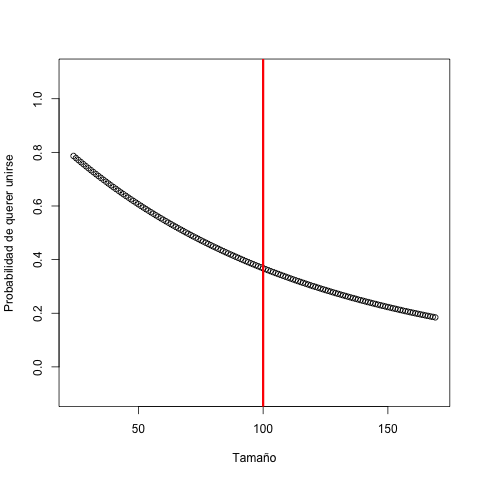

La octava práctica es sobre fenómenos de coalescencia y fragmentación, donde partículas se unen para formar cúmulos y estos cúmulos se pueden volver a descomponer en fragmentos menores. Esto es relevante en muchos campos de química, como por ejemplo en el filtrado de aguas residuales, donde solamente los cúmulos de suficiente tamaño serán capturados por el filtro y hay que buscar formas para facilitar que crezcan los cúmulos de residuos para lograr su filtrado adecuado.
Vamos a suponer que tenemos una cantidad total de $n$ partículas y que al inicio el tamaño de los $k$ cúmulos existentes sigue la distribución normal. Para lograr esto, vamos a crear $k$ valores de la distribución normal estándar (media cero, desviación estándar uno) y luego normalizarlos para convertirlos en enteros positivos que sumen a $n$.
Se ve decente el histograma, pero vamos a examinar de manera estadística si estos trucos arruinaron la normalidad de los datos.
$ Rscript normality.R
Shapiro-Wilk normality test
data: originales
W = 0.99858, p-value = 0.6106
Shapiro-Wilk normality test
data: cumulos
W = 0.99843, p-value = 0.5068
$ python3 normality.py
(0.9983153939247131, 0.4403773248195648)
(0.9982017278671265, 0.3776090443134308)

No estamos nada mal, lo nuestro es casi igual de cerca a normalidad que los datos originalmente generados. Supongamos que la mediana de los tamaños iniciales corresponde al tamaño crítico $c$: cúmulos menores a $c$ solamente pueden pegarse uno al otro y quedarse como son, pero tamaños $\geq c$ pueden además fragmentarse. La fragmentación la vamos a discretizar de tal forma que si un cúmulo se rompe, siempre resulta en dos pedazos no vacíos, cuyos tamaños se determinan uniformemente al azar.
Para mayor realismo, no vamos a tratar a $c$ como un límite fijo, sino más bien una frontera difusa donde el comportamiento cambia. Modelamos la probabilidad que un cúmulo de tamaño $\geq c$ tenga una probabilidad de rotura que depende de la cantidad de partículas presentes con una curva sigmoidal: queremos que la probabilidad sea casi cero para cúmulos pequeños, pero casi uno a cúmulos grandes.
Para la probabilidad de que un cúmulo con menos de $c$ partículas quiere unirse con otro, vamos a también usar una curva, pero esta vez de la distribución exponencial, para que cúmulos muy pequeños quieran juntarse con muchas ganas, pero que les de más hueva cuando son de tamaños mayores. Para lograr esto, jugamos con una distribución exponencial en el mismo espíritu que le obligamos a la función sigmoidal a nuestra forma deseada.
Ahora vamos a convertir nuestra población de cúmulos en una tabla de frecuencias para saber cuántos hay de cada tamaño. Esto nos libera de tener que lidiar con los cúmulos individuales, ya que pueden llegar a ser muchos de un mismo tamaño. Esto es típico en los llamados modelos de urnas, donde nos importa cuántos hay de algo, pero no su trato a nivel individual.
Nuestra simulación avanzará por dos fases en cada iteración. Primero todos aquellos cúmulos que quieren fragmentarse, hacen eso. Implementamos esto primero sin preocuparnos del resto.
Luego, con los cúmulos existentes después de esta primera fase, los que quieran unirse, se apuntan para uniones. Luego se forman pares uniformemente al azar entre los que se querían unir; es como suponer que estos cúmulos no vivan en ningún espacio físico sino son igual de probables de unirse con todos los demás. Mejor implementamos primero las uniones sin las roturas para poder verificar que todo esté funcionando como queremos.

Pinta que van creciendo como deben. Vamos a juntarlo todo ahora y hacer un poco más eficiente lo de urnas y además agregar validaciones para estar seguros que no haya algo raro como ganancia o pérdida de partículas o hasta cúmulos vacíos.
Supongamos que cúmulos con $c$ o más
partículas (haciendo referencia al tamaño
crítico c) son suficientemente grandes para
filtrar. Grafica para $n = 100000$ con $k \in \{100, 200, 400\}$
en cada iteración $t$ el porcentaje de las
partículas que se lograría filtrar si el filtrado
se realize finalizando esa iteración.
Como el primer reto, determina si algún intervalo de iteraciones en el que el filtrado alcance un óptimo. Realiza réplicas para determinar si el momento en el cual se alcanza el máximo tiene un comportamiento sistemático. Incluye visualizaciones para justificar las conclusiones.
Como un segundo reto, determina cómo los resultados de la tarea y del primer reto dependen del valor de $c$. ¿Qué todo cambia y cómo si $c$ ya no se asigna como la mediana inicial sino a un valor menor o mayor?
https://satuelisa.github.io/simulation/p8.html